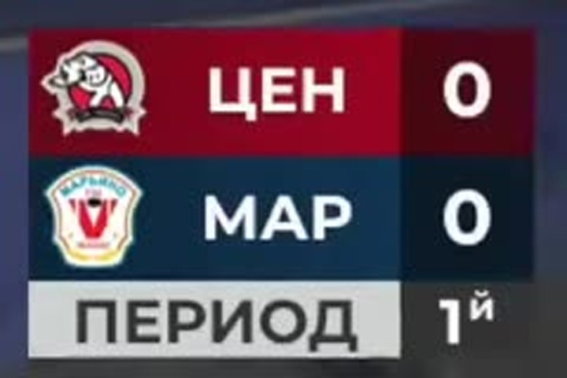
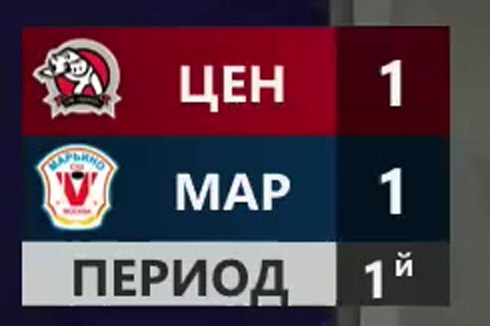
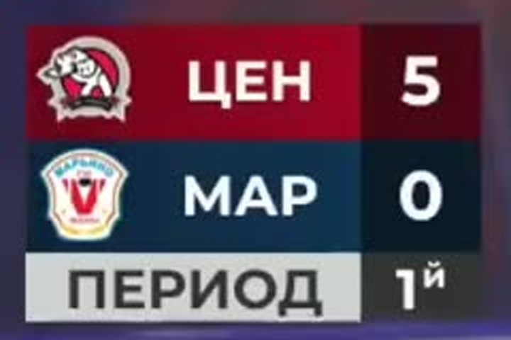
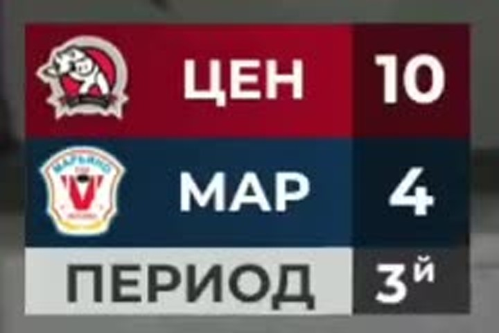
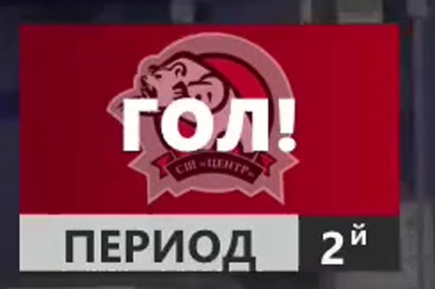
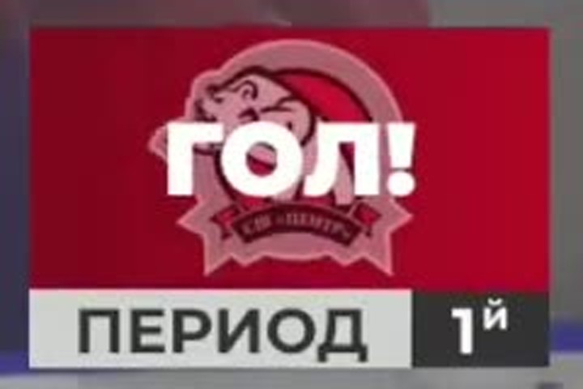

Результат: 25:8 (8:2, 8:4, 9:2). Кубок г. Москвы, 2016 г.р. 26/27, формат 4×4, группа В, 8 тур. Место: Москва, ЛЦ «Центральный», левое поле. Начало 11:00. Судьи: Сыромятников М. Р., Франков А. П. Протокол: fhmoscow.com/game/22440. Заявки на игру: вкладка «Составы».
Все таймкоды — ссылки на эпизод в источнике (формат ?t=), время по видеозаписи. Обозначения: хозяева в названии матча первые — «Центр» играет в тёмной (бордовой) форме, «Марьино» — в светлой (белой). Статус: частичный видеоразбор (версия 1). Закрыто: все 33 гола и их время (31 из 33), счёт по составам и периодам, заявки на игру, вратари по составам, голевые серии, сверка сумм. Не закрыто: броски, сейвы, владение, время на льду, звенья, штрафные броски, порядок авторов внутри периода — причины в разделах 9–11.
1. Как устроен этот матч
В формате 4×4 команда играет двумя составами одновременно: на каждой половине площадки идёт своя игра, а протокол ФХМ показывает сумму двух игр.
Подтверждения:
- Две трансляции (Состав 1 и Состав 2) — это два разных счёта, а не половины одной записи: на табло видео 1 финально 10:4, на табло видео 2 — 15:4.
- Сумма финальных счётов: 10:4 + 15:4 = 25:8 — совпадает с протоколом.
- Сумма по периодам: 5:0 + 3:2 = 8:2, 2:2 + 6:2 = 8:4, 3:2 + 6:0 = 9:2.
- Заявка на игру делит игроков на два состава, и каждый гол по номеру автора попадает в заявку своего состава (раздел 8.1).

2. Итоговые цифры
2.1 Составы и источники
| Состав | Видео | Счёт | 1-й период | 2-й период | 3-й период | Длительность |
|---|---|---|---|---|---|---|
| «Центр» Состав 1 | видео 1 | 10:4 | 5:0 | 2:2 | 3:2 | 1:37:06 |
| «Центр» Состав 2 | видео 2 | 15:4 | 3:2 | 6:2 | 6:0 | 1:32:42 |
| Итого | — | 25:8 | 8:2 | 8:4 | 9:2 | — |
2.2 Голы по периодам и командам
| Период | «Центр» | «Марьино» | Разница | Характер отрезка |
|---|---|---|---|---|
| 1-й | 8 | 2 | +6 «Центр» | быстрый отрыв, у Состава 1 — 5:0 |
| 2-й | 8 | 4 | +4 «Центр» | самый ровный отрезок «Марьино» |
| 3-й | 9 | 2 | +7 «Центр» | у Состава 2 — 6:0 |
| Матч | 25 | 8 | +17 | победа хозяев |
2.3 Голы игроков (по протоколу ФХМ)
Голевые передачи в турнире ФХМ не ведутся, поэтому ассистов нет ни в протоколе, ни в подтверждённом видеоряде.
«Центр» 2016 — 25 голов, 16 авторов: Турков № 35 — 4; Дробязко № 20, Ельцов № 25, Хатеев № 4, Сахаров № 7, Крезо № 55, Федоров № 71 — по 2; Власов № 5, Букатов № 89, Чуваткин № 17, Иванцивский № 14, Давыденко № 26, Ерохин № 99, Мещеряков № 21, Михейкин № 88, Пеикришвили № 23 — по 1.
«Марьино» 2016 — 8 голов, 6 авторов: Бахарев № 77 — 2, Коршунов № 11 — 2, Рыков № 21, Летягин № 54, Романцов № 17, Фазлиахметов № 8 — по 1.
3. Хронология голов (время — по видео, ссылки на эпизоды)
Время взято из видео: плашка «ГОЛ!» (она ставится на голы «Центра») или смена табло минус измеренная задержка 4,7 с (голы «Марьино»). Точность ±1–2 с и ±5 с соответственно.
Знак † означает, что порядок авторов внутри периода взят из протокола и не подтверждён видеоразрядом — см. раздел 11, пункт 2.
3.1 Состав 1 — 10:4
| # | Период | Гол (видео) | Табло (видео) | Команда | Автор (протокол) | Счёт в игре |
|---|---|---|---|---|---|---|
| 1 | 1 | 1692 с | 1696 с | Центр | Букатов Дмитрий № 89 † | 1:0 |
| 2 | 1 | 1978 с | 1983 с | Центр | Дробязко Александр № 20 † | 2:0 |
| 3 | 1 | 2016 с | 2021 с | Центр | Дробязко Александр № 20 † | 3:0 |
| 4 | 1 | 2055 с | 2060 с | Центр | Турков Алексей № 35 † | 4:0 |
| 5 | 1 | 2369 с | 2374 с | Центр | Власов Александр № 5 † | 5:0 |
| 6 | 2 | 2800 с | 2804 с | Марьино | Рыков Ринат № 21 | 5:1 |
| 7 | 2 | 3664 с | 3668 с | Центр | Ельцов Роман № 25 | 6:1 |
| 8 | 2 | 3824 с | 3828 с | Марьино | Летягин Ярослав № 54 | 6:2 |
| 9 | 2 | 3931 с | 3935 с | Центр | Ельцов Роман № 25 | 7:2 |
| 10 | 3 | 4231 с | 4236 с | Марьино | Романцов Ярослав № 17 † | 7:3 |
| 11 | 3 | 4338 с | 4343 с | Центр | Турков Алексей № 35 | 8:3 |
| 12 | 3 | 4394 с | 4398 с | Марьино | Фазлиахметов Тагир № 8 † | 8:4 |
| 13 | 3 | 4558 с | 4562 с | Центр | Турков Алексей № 35 | 9:4 |
| 14 | 3 | 4785 с | 4790 с | Центр | Турков Алексей № 35 | 10:4 |
3.2 Состав 2 — 15:4
| # | Период | Гол (видео) | Табло (видео) | Команда | Автор (протокол) | Счёт в игре |
|---|---|---|---|---|---|---|
| 1 | 1 | не установлено | не установлено | Марьино | Бахарев Артемий № 77 | 1:1 |
| 2 | 1 | не установлено | не установлено | Центр | Федоров Дорофей № 71 † | 1:0 |
| 3 | 1 | 1534 с | 1539 с | Центр | Чуваткин Григорий № 17 † | 2:1 |
| 4 | 1 | 1692 с | 1697 с | Марьино | Бахарев Артемий № 77 | 2:2 |
| 5 | 1 | 1892 с | 1898 с | Центр | Хатеев Лев № 4 † | 3:2 |
| 6 | 2 | 2496 с | 2502 с | Центр | Федоров Дорофей № 71 † | 4:2 |
| 7 | 2 | 2512 с | 2518 с | Центр | Сахаров Андрей № 7 † | 5:2 |
| 8 | 2 | 2798 с | 2803 с | Центр | Крезо Павел № 55 † | 6:2 |
| 9 | 2 | 2901 с | 2906 с | Марьино | Коршунов Максим № 11 | 6:3 |
| 10 | 2 | 3035 с | 3040 с | Центр | Иванцивский Александр № 14 † | 7:3 |
| 11 | 2 | 3129 с | 3134 с | Марьино | Коршунов Максим № 11 | 7:4 |
| 12 | 2 | 3188 с | 3192 с | Центр | Хатеев Лев № 4 † | 8:4 |
| 13 | 2 | 3316 с | 3322 с | Центр | Пеикришвили Милан № 23 † | 9:4 |
| 14 | 3 | 4064 с | 4069 с | Центр | Давыденко Дарья № 26 † | 10:4 |
| 15 | 3 | 4417 с | 4422 с | Центр | Сахаров Андрей № 7 † | 11:4 |
| 16 | 3 | 4427 с | 4432 с | Центр | Ерохин Эрнест № 99 † | 12:4 |
| 17 | 3 | 5092 с | 5098 с | Центр | Мещеряков Тимофей № 21 † | 13:4 |
| 18 | 3 | 5212 с | 5217 с | Центр | Михейкин Андрей № 88 † | 14:4 |
| 19 | 3 | 5315 с | 5320 с | Центр | Крезо Павел № 55 † | 15:4 |
Первые два гола Состава 2 попали в отрезок, когда табло ещё не было включено (видео 2, до 22:30). Табло появилось уже при счёте 1:1 — поэтому ни время, ни порядок этих двух голов (кто забил первым — «Центр» или «Марьино») по видео не устанавливаются. В таблице они оставлены без времени; счёт в игре для них — восстановленный по протоколу, а не наблюдённый.

4. Разбор по периодам
4.1 Первый период: 8:2, и почти весь перевес — у Состава 1
Состав 1 начал с пяти безответных голов: 1:0 на 28:12, затем четыре гола за 11 минут видео — 32:58, 33:36, 34:15 и 39:29. Три гола из этих пяти пришлись на 77 секунд (32:58 → 34:15) — это самый плотный отрезок матча. «Марьино» в первом периоде Состава 1 не забило ни разу.

Состав 2 первый период провёл ровно: 1:1 к моменту включения табло, затем обмен голами — «Центр» вперёд (25:34), «Марьино» сравнивает (28:12), «Центр» снова вперёд перед перерывом (31:32) — 3:2.
4.2 Второй период: 8:4 — единственный отрезок, который «Марьино» не проиграло
- Состав 1 (2:2): «Марьино» открыло счёт периода (46:40), «Центр» ответил голом Ельцова (1:01:04), гости снова сравняли (1:03:44), и второй гол Ельцова (1:05:31) сделал 7:2. Период равен, но инициатива у «Центра».
- Состав 2 (6:2): «Центр» забил трижды за пять минут (41:36, 41:52, 46:38), «Марьино» отвечало (48:21, 52:09), но «Центр» добавил ещё три (50:35, 53:08, 55:16) и ушёл на перерыв 9:4.
4.3 Третий период: 9:2, у Состава 2 — 6:0
- Состав 1 (3:2): самый упорный отрезок матча. «Марьино» забило первым (1:10:31), «Центр» ответил (1:12:18), гости снова сократили (1:13:14), и только два гола Туркова (1:15:58, 1:19:45) сняли вопрос.

- Состав 2 (6:0): «Марьино» не забило ни разу. Голы шли с нарастанием паузы в середине периода: 10:4 на 1:07:44, затем 11:4 и 12:4 в течение 10 секунд (1:13:37, 1:13:47), а потом три гола в концовке (1:24:52, 1:26:52, 1:28:35).
5. Ключевые эпизоды
- 28:12 (видео 1) — первый гол матча, 1:0.
- 32:58–34:15 (видео 1) — три гола за 77 секунд, счёт ушёл с 1:0 на 4:0.
- 39:29 (видео 1) — 5:0, «Марьино» в Составе 1 остаётся без гола в первом периоде.
- 46:40 (видео 1) — первый ответ «Марьино» в Составе 1.
- 1:13:14 (видео 1) — 8:4: последний раз, когда «Марьино» в Составе 1 было ближе трёх голов.
- 1:13:37 и 1:13:47 (видео 2) — два гола за 10 секунд, 11:4 и 12:4.


5.1 Серии и интервалы между голами
| Состав | Серия | Период | Голов подряд |
|---|---|---|---|
| 1 | «Центр» на старте | 1 | 5 (28:12 → 39:29) |
| 1 | «Центр» в середине | 2 | 1 (1:01:04) |
| 1 | «Центр» в концовке | 3 | 2 (1:15:58 → 1:19:45) |
| 2 | «Центр» во втором периоде | 2 | 3 (41:36 → 46:38) |
| 2 | «Центр» во втором периоде | 2 | 3 (50:35 → 55:16) |
| 2 | «Центр» в третьем периоде | 3 | 6 (1:07:44 → 1:28:35) |
Самые короткие интервалы: 10 с (видео 2, 1:13:37 → 1:13:47) и 16 с (видео 2, 41:36 → 41:52). Самый длинный — 22 минуты видео между 9-м и 10-м голом Состава 2 (55:16 → 1:07:44), это перерыв между периодами.
6. Вратари
Заявка на игру опубликована на странице матча (вкладка «Составы»): вратари указаны по каждому составу, по одному — значит, на команду в этом матче заявлено два вратаря, а не четыре из общего списка.
| Команда | Состав 1 | Состав 2 |
|---|---|---|
| «Центр» 2016 | № 1 Кузнецов Григорий | № 44 Чертков Геннадий |
| «Марьино» 2016 | № 1 Мирошниченко Иоанн | № 88 Поликарпов Леонид |
Пропущено по составам: у «Центра» — 4 и 4; у «Марьино» — 10 и 15. Броски в створ и сейвы не считались (раздел 9), поэтому процент отражённых не приводится: без разметки бросков он был бы выдуман.
7. Дисциплина и штрафные броски
- В протоколе нет ни одного нарушения: фильтр «Нарушения» пуст, штрафных минут нет.
- В 4×4 нарушение обычно не даёт двухминутного штрафа, а приводит к штрафному броску — и такой буллит в протокол как нарушение не попадает (так было в разборе матча 22449, где нашлись три буллита при нуле нарушений).
- По этому матчу сплошной поиск буллитов не выполнялся. Отдельного признака в кадре (освобождённая площадка + одиночный игрок) я не размечал, поэтому число штрафных бросков остаётся не установленным, а не нулевым. Протокол подтверждает только отсутствие нарушений.
8. Звенья
Модель формата. В 4×4 звенья обозначаются цветными метками на шлемах: красный — 1-е звено, жёлтый — 2-е, зелёное — 3-е; у зелёных бывает пятеро, и пятый ротируется внутри звена.
По этому матчу звенья не установлены. Причина конкретная: на проверенных кадрах (видео 1, 39:00 и 49:00; видео 2, 22:40) метки на шлемах либо не видны, либо попадают в ракурс, где не читается номер. Цвет формы команды к звену отношения не имеет: «Центр» играет в бордовом, «Марьино» — в белом.
Поэтому в отчёте нет строк «голы звена», «броски звена» и «время на льду»: номинальную пятёрку нельзя натягивать на фактические смены без подтверждения.
8.1 Заявки на игру (кто играл в каждом составе)
Данные со страницы матча (блок собирается скриптом, отдаёт POST /api/game/player/list).
| Команда | Состав | Вратарь | Защитники | Нападающие |
|---|---|---|---|---|
| «Центр» | 1 | № 1 Кузнецов | № 12 Шевченко, № 13 Зеленский, № 27 Кулагин, № 86 Мекеня, № 89 Букатов | № 3 Айнетдинов, № 5 Власов, № 10 Захаров, № 20 Дробязко, № 24 Квасов, № 25 Ельцов, № 30 Друев, № 35 Турков |
| «Центр» | 2 | № 44 Чертков | № 14 Иванцивский, № 18 Гастев, № 23 Пеикришвили, № 26 Давыденко, № 80 Ваккер | № 4 Хатеев, № 7 Сахаров, № 17 Чуваткин, № 21 Мещеряков, № 55 Крезо, № 71 Федоров, № 88 Михейкин, № 99 Ерохин |
| «Марьино» | 1 | № 1 Мирошниченко | № 2 Матвеев, № 3 Зуйков, № 13 Горица, № 17 Романцов | № 8 Фазлиахметов, № 19 Пундель, № 21 Рыков, № 24 Филин, № 25 Андреев, № 29 Джуромский, № 54 Летягин, № 55 Галактионов |
| «Марьино» | 2 | № 88 Поликарпов | № 6 Ткаченко, № 7 Шаров, № 38 Шамыгин, № 95 Дуков | № 11 Коршунов, № 20 Булгаков, № 35 Дарданов, № 67 Халимов, № 70 Минаев, № 77 Бахарев, № 96 Ширяев, № 99 Миронов |
Заявка дала важную сверку: все 33 гола попадают в заявку своего состава. Например, голы «Марьино» в Составе 1 забили № 21, № 54, № 17 и № 8 — все четверо есть в заявке Состава 1; голы Состава 2 — № 77 и № 11, оба из заявки Состава 2.
8.2 Проверка по голам
| Состав | Голы «Центра» | Голы «Марьино» | Сумма |
|---|---|---|---|
| 1 | 10 | 4 | 14 |
| 2 | 15 | 4 | 19 |
| Итого | 25 | 8 | 33 |
9. Что установлено, а что нет
| Показатель | Статус | Основание |
|---|---|---|
| Счёт, периоды, составы | установлено | табло двух записей + протокол |
| Все 33 гола и команда | установлено | 31 гол с точным временем, 2 — без времени |
| Время гола | 31 из 33: ±1–2 с (25) и ±5 с (6) | плашка «ГОЛ!» и таймлайн табло |
| Автор гола | по протоколу; порядок внутри периода — частично | 11 голов подтверждены номером или единственностью автора |
| Заявки на игру, вратари по составам | установлено | вкладка «Составы» на странице матча |
| Голевые передачи | не установлено | ФХМ не ведёт их в турнире |
| Броски в створ, сейвы | не установлено | нет непрерывной разметки |
| Владение | не установлено | нет непрерывной разметки |
| Звенья, смены, время на льду | не установлено | метки на шлемах не читаются |
| Штрафные броски | не установлено | сплошной поиск не выполнялся; нарушений в протоколе 0 |
10. Покрытие и источники
| Источник | Длительность | Что просмотрено | Метод |
|---|---|---|---|
| Видео 1 | 1:37:06 | табло 19:26–91:17, детектор плашки по всей записи | таймлайн табло 4 к/с + OCR цифр + детектор «ГОЛ!» |
| Видео 2 | 1:32:42 | табло 22:30–88:40, детектор плашки по всей записи | то же |
Как это сделано технически: из записи нарезались кадры области табло с частотой 4 кадра/с, цифры счёта распознавались по шаблонам, смена состояния фиксировалась только при устойчивом повторе. Плашка «ГОЛ!» определяется по красному баннеру, перекрывающему строки счёта. Задержка обновления табло измерена по 25 голам с плашкой: она стабильна и равна 4,7 с.
Полные записи 1080p загружались локально, кадры-доказательства взяты из них. Заявки на игру получены из POST /api/game/player/list (по команде и составу).
11. Ограничения
- Нет непрерывного покадрового просмотра всех ~3 часов записи: основной проход — таймлайн табло и детектор плашки. Они дают голы и время, но не броски, сейвы и владение.
- Порядок авторов внутри периода не подтверждён видеоразрядом. Протокол ФХМ в 4×4 нумерует голы служебными временами (
00:00,18:00,36:00…), и порядок строк не совпадает с реальным порядком на площадке. Прямой контрпример: в Составе 1, второй период, протокол даёт «Марьино», «Марьино», «Центр», «Центр», а табло показывает «Марьино», «Центр», «Марьино», «Центр». Поэтому 22 гола помечены †; у 11 голов автор однозначен (единственный автор периода у команды) или подтверждён чтением номера — как № 54 Летягин на 1:03:44 видео 1. - Два гола Состава 2 не датированы: табло включилось на 22:30 видео уже при счёте 1:1.
- Звенья не установлены: цветные метки на шлемах в доступных кадрах не читаются вместе с номером.
- Штрафные броски не искались сплошь — см. раздел 7.
- Концовки записей содержат повторную нарезку голов (видео 1 — с 1:31:18, видео 2 — в самом конце): табло там последовательно проходит все прежние счета. Эти повторы не считались новыми голами.
12. Рекомендации
- Держать счёт как задачу, а не как повод расслабиться. 25:8 — это не только сила «Центра», но и 8 пропущенных: в Составе 1 «Марьино» забивало по голу в каждом периоде после 5:0.
- Первый период — главный ресурс. 8:2 сделаны за счёт старта: у Состава 1 пять голов до перерыва, а три гола из них — за 77 секунд.
- Оборона Состава 2 в третьем периоде — лучший отрезок матча. 6:0 при шести забитых — единственный период, который команда провела «на ноль».
- Турков № 35 — главная ударная сила Состава 1: 4 гола, из них три в третьем периоде. Стоит проверить, не перегружен ли он по сменам, когда появится разметка времени на льду.
- Заказать разметку звеньев у тренера. Без неё разбор остаётся на уровне голов и счёта: нельзя ответить, какое звено проваливало второй период.
13. Версии и поправки
Версия 1 (02.11.2026): первичный разбор матча № 22440. Размечены все 33 гола, время 31 из них, счёт по составам и периодам, заявки на игру, вратари, голевые серии. Найдено: табло видео 2 включилось с опозданием (при счёте 1:1); порядок голов в протоколе ФХМ не совпадает с порядком на площадке.
Сверка арифметики: 10 + 15 = 25 и 4 + 4 = 8; (5:0)+(3:2) = 8:2; (2:2)+(6:2) = 8:4; (3:2)+(6:0) = 9:2; сумма голов «Центра» — 25, «Марьино» — 8; 25 + 8 = 33 события в протоколе.